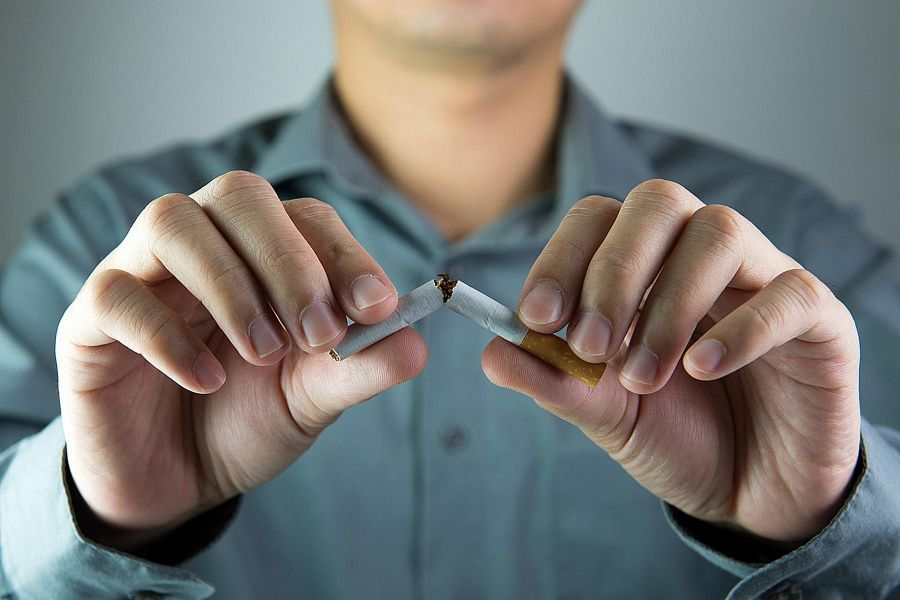

Шаг 1. Найдите причину
Мотивация — это очень важно. Ничто не заставит вас бросить курить, если вы сами этого не захотите. Найдите именно личную причину. Почему вы хотите перестать курить? Вы хотите защитить окружающих от последствий пассивного курения? Или уменьшить свои риски заболеть раком легкого и сердечно-сосудистыми заболеваниями? Может, вы хотите привести свои зубы в порядок? Или выглядеть моложе? Выберите причину по душе, которая достаточно сильна, чтобы перевесить ваше желание закурить. И помните: вы бросаете курить исключительно для себя!
Шаг 2. Найдите дату и дайте обещание
Выберите дату — и перестаньте курить. Пообещайте самому себе и близким, что в этот день вы бросите курить сигареты, вейпить или как-то иначе потреблять никотин.
Подготовьтесь: например, постепенно сократите количество выкуриваемых сигарет в день, чтобы организм был готов к полному отказу от сигарет. А еще лучше скажите сразу нет сигаретам, и приготовьтесь жить по-новому!
Возьмите на себя обязательство не употреблять табачные изделия после дня отказа от курения. Не стоит устраивать себе «день курения в награду» — это никак не поможет вам бросить курить, а только растянет процесс отказа от табака.
Придумайте себе вознаграждение. Есть специальные калькуляторы, которые вычисляют, сколько средств вам удалось сэкономить за счет отказа от табака. Потратьте часть этих денег на то, чтобы поднять себе настроение, позвольте себе сходить лишний раз в кино или на концерт!
Шаг 3. Выберите свой метод отказа от курения
Есть несколько способов бросить курить. Вы можете выбрать один из них или как-то их сочетать.
Прекратите курить в день отказа от курения. В некоторых случаях этот способ срабатывает лучше, так как он не затягивает процесс отказа от курения.
- Сократите количество выкуриваемых сигарет, пока оно не дойдет до нуля. Многие люди выбирают именно этот способ, так как он позволяет постепенно привыкнуть к меньшему потреблению никотина.
- Выкуривайте только часть каждой сигареты, постепенно уменьшая и количество затяжек, и количество сигарет.
Шаг 4. Рассмотрите возможность медикаментозной терапии
Отказ от курения может повлиять на ваше физическое состояние: вызвать головную боль, раздражительность и упадок сил. Тяга к сигаретам в такие моменты может только усиливаться. Никотиновая заместительная терапия поможет обуздать эти желания.
Никотиновая жевательная резинка, пастилки, пластыри повышают шансы на успех. Также, в некоторых случаях людям, пытающимся бросить курить, прописывают прием других лекарственных препаратов. Поддержка специалиста и правильно подобранные лекарства — лучший способ бросить курить.
И ни в коем случае не пытайтесь бросить курить с помощью электронных сигарет, вейпов и прочих приспособлений — они только усугубят проблему, и вы никогда не избавитесь от никотиновой зависимости.
Шаг 5. Составьте план
У вас ведь уже есть причина, по которой вы бросаете курить? Отлично! Самое время реализовывать новые цели и тратить деньги не на покупку сигарет, а на что-то другое.
Полезно будет иметь под рукой какие-то полезные закуски (фрукты, овощи, орехи), жевательную резинку. При возникновении желания покурить вы можете попробовать снять психологическое напряжение за счет поедания орехов.
Одна из причин, по которой люди курят, заключается в том, что никотин помогает им расслабиться. После того, как вы бросите курить, вам нужны будут новые способы выпустить пар: послушать приятную музыку, пообщаться с друзьями, найти время для похода в кино, побаловать себя массажем.
Найдите приятные способы заполнить время: сделайте зарядку, прогуляйтесь, попейте чай или кофе. Часто людям помогает какое-то занятие — рисование, вязание, оригами. При этом избегайте занятий, которые в недавней вашей жизни были ассоциированы с курением.
Помните, что физическая активность помогает обуздать тягу к никотину и ослабить некоторые симптомы абстиненции. Поэтому всякий раз, как руки потянутся к пачке сигарет, сделайте легкую зарядку, выгуляйте собаку, займитесь уборкой. В физической активности есть еще один плюс: бывает, что курильщики после отказа от сигарет начинают набирать вес. Зарядка поможет контролировать массу тела.
Избавьтесь от сигареты, вейпа, зажигалки, пепельницы и любых других изделий, связанных с табаком, в вашем доме, на рабочем месте и в машине. Старайтесь избегать стрессовых ситуаций в течение первых нескольких недель после отказа от курения.
Избегайте приема алкоголя: когда вы выпиваете, не курить становится сложнее. Аналогичная ситуация может возникать с кофе или в любом другом случае, когда вы привыкли курить. Если обычно вы курите после того, как проснетесь, или после еды, попробуйте заняться чем-то другим. Постепенно одна привычка заменит другую.
Помните, что многие люди пробуют много раз, прежде чем бросают сигареты навсегда. Если у вас не получилось с первого раза, не расстраивайтесь. Напротив, это повод провести работу над ошибками. Подумайте, что именно привело к рецидиву, об эмоциях, которые вы испытывали в тот момент, об обстановке, в которой находились. Используйте эту информацию как возможность доработать свою стратегию по отказу от курения и попробуйте еще раз.
